채널: 오늘의주식 | 길이: 24:28 | 날짜: 2026-09-19
발화자는 대한광통신이 프로그램 매수 1등을 차지하면서 엄청난 거래와 함께 장대양봉을 쏘아 올리고 있다는 소식으로 영상을 시작한다. 그는 코스닥의 프로그램 순매수 순위를 보면 대한광통신이 다른 종목들과 비교해도 압도적으로 순매수 금액이 많이 찍히며 1등을 차지하고 있다고 전한다. 이는 외국인들의 대량 프로그램 매수가 들어오고 있다는 의미다.
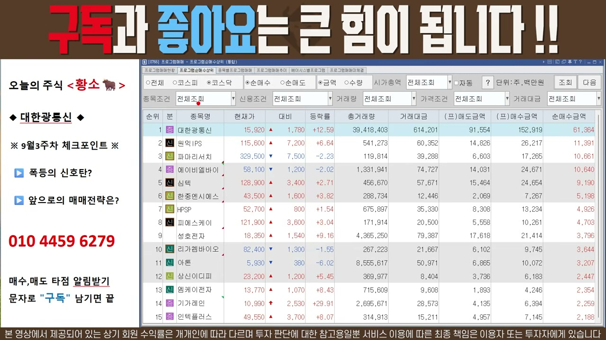
그러나 발화자는 이러한 상승이 나올 때 조심해야 되는 부분들이 있다고 즉시 경고한다. 대한광통신의 상방이 아직도 많이 열려 있긴 하지만, 지금 시점에서 반드시 짚고 넘어가야 할 내용들이 있어서 알려주겠다며 집중을 요청한다. 또한 시작 전에 좋아요를 한 번씩 눌러달라고 부탁한다. 현재는 테마별로 순환매가 돌고 있어서 반도체도 갔다가 원전도 갔다가 로봇도 갔다가 하는 흐름이 진행 중이라는 배경도 설명한다.
발화자는 코스닥에서 대표 대장 테마 중 하나가 광통신이며, 그 대장이 바로 대한광통신이라고 규정한다. 대한광통신은 그 안에서도 거래대금이 제일 많이 터지는 종목이다. 그래서 광통신 테마를 외국인들이 담을 때 가장 먼저, 가장 제일 많이 올라가고 제일 먼저 치고 올라갈 수 있는 게 바로 대한광통신이라고 설명한다. 그 이유는 프로그램 매수에서 들어오면서 패시브 자금도 같이 들어오기 때문이다.
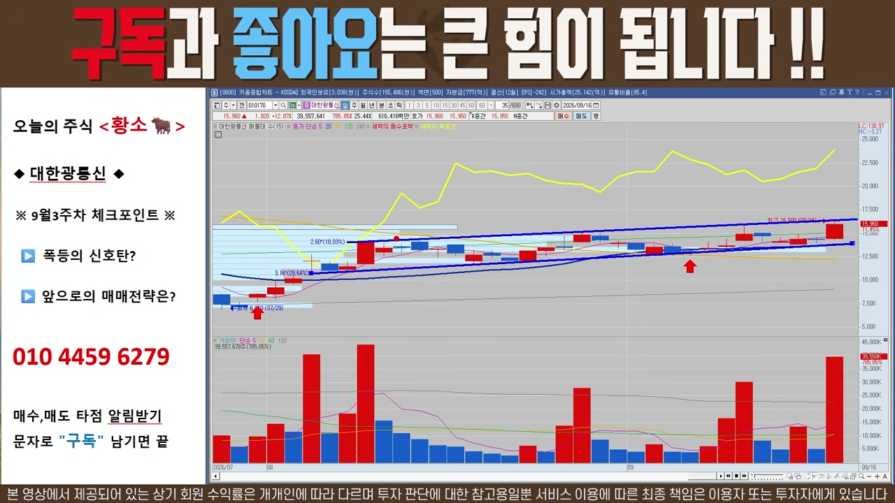
또한 지금의 상승뿐만이 아니라 앞전부터 대한광통신의 추세 자체가 완만한 상승이 계속 이어지고 있었다고 지적한다. 상승-조정-상승-조정-또 상승-조정의 흐름이 반복되어 왔다는 것이다. 그 결과 지금은 추세의 상단을 터치한 상태이며, 여기를 뚫고 올라가느냐 아니면 또 밀리느냐, 여기 맞고 다시 하단으로 밀리느냐의 갈림길에 서 있다고 진단한다.
발화자는 앞전에도 대한광통신의 패턴이 비슷했다고 말한다. 올랐다 내렸다 하는 상승과 조정 파동 안에서 고점 부근을 터치하면 수세 때 상단에 맞고 하락이 굉장히 세게 나왔다는 것이다. 여기서도 마찬가지며, 이런 하락들을 피하지 못하고 그런 자리에서 매수를 하거나 팔지 못하면 주가가 크게 떨어져 버린다고 경고한다.
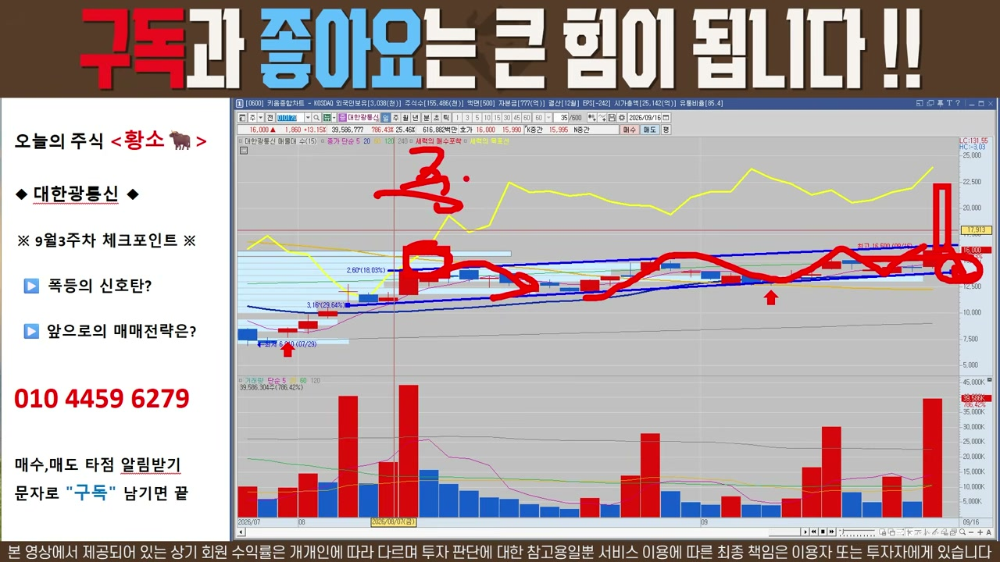
부딪히고 내려오고, 부딪히고 내려오고, 부딪히고 내려오는 흐름이 반복되는 가운데, 이번에는 뚫어낼 건지 또 밀릴 건지를 지금 판단해야 되는 아주 중요한 시점이 왔다는 것이다. 발화자는 결론부터 말씀드리면 이번에는 대한광통신이 여기를 돌파해 낼 거라고 본다고 밝힌다. 다만 중요한 것은 이게 바로 돌파가 안 나오고 잠깐 쉬었다가 돌파를 할 수가 있다는 점이며, 왜냐면 변수가 있기 때문이라고 설명한다. 그는 시청자들에게 "폭발"이라고 댓글을 한 번씩 남겨달라고 요청한다.
발화자는 대한광통신이 지금 방향성 자체가 우상향세가 이어지고 있다는 것의 의미를 설명한다. 이것은 추세 자체가 상방으로 잡혀 있기 때문에 주가가 내려가더라도, 조정이 나오더라도 다시 밀고 올라가는 힘이 있다는 것이다. 그러면 이런 상승 추세를 보이다가 진짜 시세가 나오고 고점이 나올 때가 언젠지 아느냐고 질문하며, 완만한 상승 추세를 위로 돌파를 해 낼 때 진짜 시세가 나온다고 답한다.
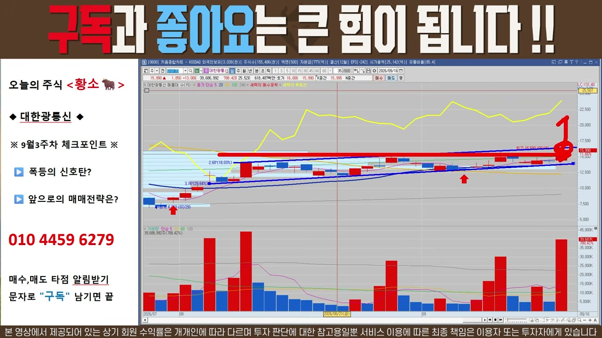
그런데 사실 지금 대한광통신의 움직임을 보면 꼭 올라가면 찍어 누르고, 올라가면 찍어 누르고, 올라가면 찍어 눌렀다는 것이다. 이런 흐름이 나올 수밖에 없었던 이유가 있는데, 대한광통신의 주봉을 보면 앞전에 이렇게 떨어졌던 구간이 있기 때문에 많이 오른만큼 조정이 길었고, 떨어지면서 매물대가 쌓여 있으니까 다시 올라갈 때는 이 매물 소화 과정이 분명히 있어야 된다는 것이다.
주가가 올라갈 때 그냥 쭉 밀고 올라가는 게 아니라 올라가다 찍어 눌리고, 올라가다 찍어 눌리고, 올라가다 찍어 눌리는 흐름들이 계속 나왔던 이유가 바로 매물 소화 과정 때문이다. 발화자는 앞전에도 대한광통신 주봉을 설명드리면서 앞으로 어떤 흐름이 나올 것이라고 알려드렸던 부분이 있다고 상기시킨다.
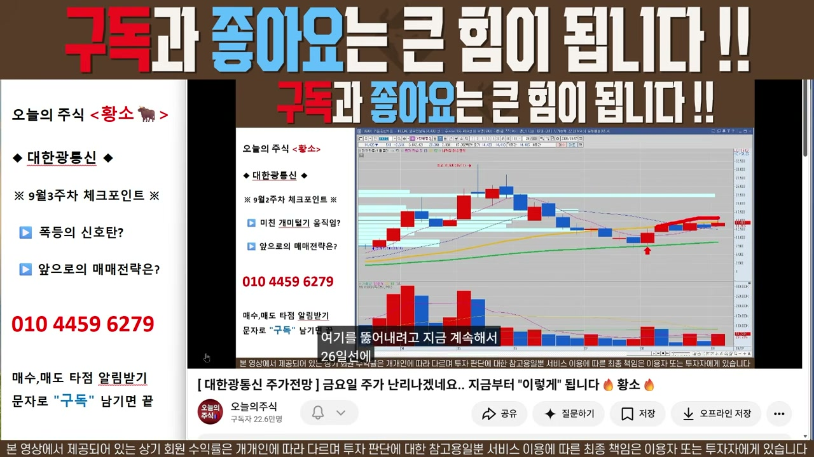
당시 그는 1년선 지지하고 올라갔을 때 26일선을 완벽하게 뚫어내지는 못했지만, 여기를 뚫어내려고 지금 계속해서 26일선에 붙어서 시도를 해주고 있다고 말했다. 저항 맞고 밀릴 거면 진작 밀렸을 텐데 지금은 여기 26일선에 붙어서 6개월 선을 뚫어내려고 준비를 하는 과정이기 때문에 궁극적으로는 여기를 좀 시원하게 돌파를 해 줄 거라고 보여진다고 분석했다. 6개월 선에 붙어서 떨어지지 않고 밀리지 않고 여기서 유지를 해주고 있는 걸 봤을 때 결국에는 여기를 뚫어내는 흐름이 나올 거라고 알려드렸다는 것이다.
그 흐름이 바로 오늘 나왔다. 오늘 26일선을 돌파하는 모습이 나왔기 때문에 이것도 생각보다 중요한 자리를 뚫어낸 것이며, 주봉상에서 중요한 자리를 돌파하면 거기서부터 추가적인 상승세가 이어질 수 있다고 설명한다.
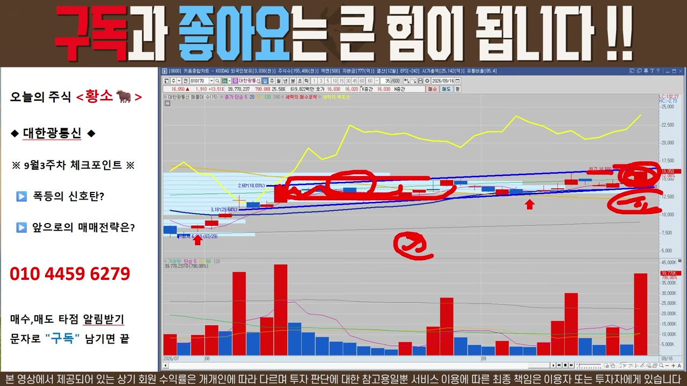
그래서 대한광통신의 이번 상승은 뭔가 앞전과 조금 다르다고 강조한다. 이게 충분히 매물 소화 과정과 조정을 겪은 다음에 그 매물 소화 과정이 나오고 여기를 뚫어올리는 시점, 즉 폭발적인 흐름이 나올 수 있는 시점이기 때문에 이번 상승은 조금 다르다는 것이다. 앞전처럼 그냥 올라가다가 무작정 때려맞는 게 아니라, 여기서부터는 살짝 부딪히고 밀리더라도 다시 좀 빠른 실내에 뚫어내는 그런 움직임이 나올 것이라고 예상한다.
발화자는 이제 가격에 대한 기준을 잡아놓을 것이라며, 대한광통신이 올라가다가 중요하게 돌파해 놓은 자리가 있다고 말한다. 그가 파란색 선으로 그어놓은 15,250원 라인인데, 여기가 앞전에 올라가다가 저항 맞고 밀리고, 그다음에 올라가다가 저항 맞고 밀렸던 중요한 구간이다.
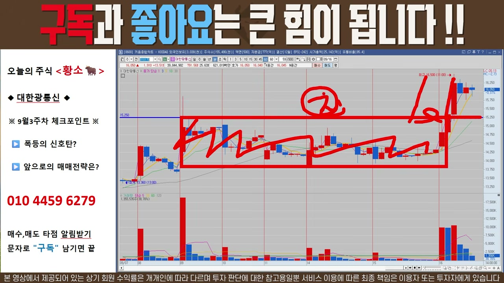
이 구간을 돌파하면서 상승이 나왔고 박스권을 돌파했기 때문에, 뚫어낸 다음에 눌릴 때 이 라인이 지지 라인으로 바뀔 수가 있다고 설명한다. 그래서 설령 대한광통신의 주가가 여기를 뚫어내기 전에 한번 밀린다라고 해도 이 군가까지 오면 다시 매수의 기회가 될 수 있다는 것이다. 물론 변수에 따라서 살짝 위나 살짝 아래가 될 수 있지만, 어쨌든 15,250원이라는 기준이 있고 이 가격 부근에 다가온다면 거기가 바로 매수의 반격의 시그널, 반격의 타점이 될 수 있다고 강조한다.
발화자는 올라갈 때 그냥 막 쫓아들어가는 게 아니라, 매수 타점을 잡고 또 다음 타점을 노린다라고 할 때는 올라갈 때 말고 눌림이 나올 때 이 타점들을 노려야 된다고 강조한다. 이것이 첫 번째 체크포인트다.
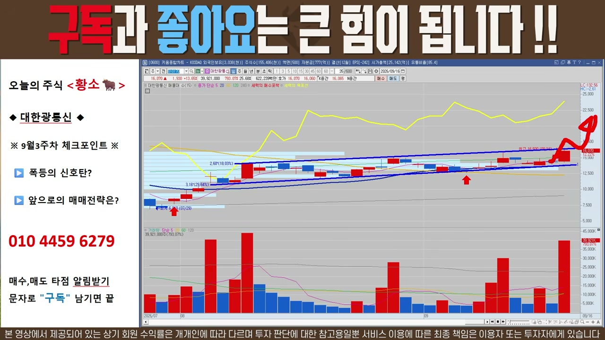
두 번째는 추세대의 상단 부근을 돌파를 시도 중인데, 만약에 이 추세대를 돌파한 다음에 눌림이 나올 때는 파란색 선 라인이 또 돌파된 다음에는 지지선으로 바뀔 것이라는 설명이다. 즉 뚫어 놓았다가 여기가 지지가 되면서 반등이 나올 수 있으니까, 만약에 돌파가 된다라고 했을 때는 그다음에는 다시 전략들을 세워야 된다고 말한다. 핵심은 눌릴 때 잡는 것인데, 올라갈 때 잡으면 고점에서 또 때려맞고 이럴 수가 있으니까 매수 타점을 잡을 거라면 이 눌림을 잘 활용해볼 거라는 것을 기억해두라고 당부한다.
눌림 타점을 잡을 때의 핵심은 거래량이다. 주가가 올랐다 내렸다 할 때 거래량을 보면 되는데, 올라갈 때는 거래가 많이 터지지만 거래가 많이 터질 때 타점이 나오는 게 아니라, 거래가 터졌다가 주가가 눌릴 때 거래가 바닥칠 때 대한광통신은 항상 타점이 나왔다고 발화자는 설명한다.
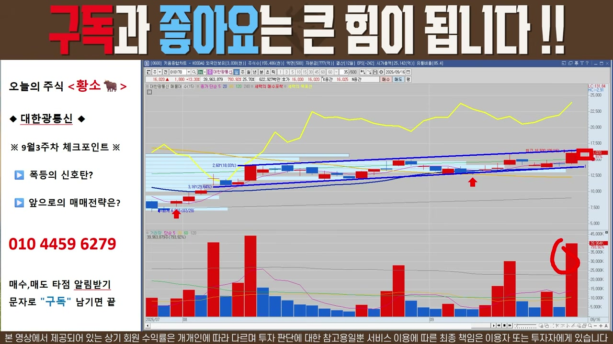
이런 타점들을 공략하면 또 거래가 터지면서 올라갔고, 눌릴 때 거래가 줄어들 때 타점 잡으면 또 거래가 터지면서 올라갔고, 눌릴 때 거래가 줄었을 때 또 타점 잡으면 또 거래가 터지면서 올라갔다는 패턴이 반복됐다. 그렇다면 대한광통신의 다음 타점은 또 거래가 터졌다가 거래가 줄어들 때가 될 것이라는 예측이다. 거래가 한번 터졌다가 올라갔다가 눌릴 때, 아니면 눌렀다가 올라가든 거래가 줄어든다면 그게 바로 우리가 공략해야 되는 반격의 매수 타점이 될 수 있다고 설명한다.
주가가 올라갔을 때 다음 목표가를 또 잡아놔야 되는데, 대한광통신의 매도가 진짜 또 중요하다고 발화자는 강조한다. 왜냐하면 올라갔을 때 만약에 못 팔면 어떻게 되느냐면, 앞전처럼 이런 엄청난 어마어마한 하락을 또 두드려 맞아야 되기 때문이다. 잘못 잡으면 한 -2% 나오는 것이 굉장히 쉽게 주가가 떨어지기도 한다며, 매도에 대한 시그널들이 나왔을 때 놓치면 안 된다고 경고한다.
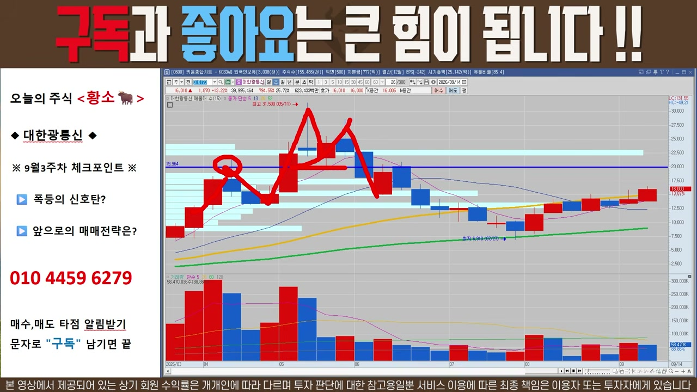
주봉으로 보면 가격적으로 봤을 때 일단 2만 원 라인이 한번 저항으로 작용을 할 수가 있다. 여기가 앞전에 올라가다가 저항 맞고 밀리고, 올라갔다가 내려왔을 때 지지되고, 급등하고 자 깨지니까 저항 생기고 맞고 또 떨어졌던 자리다. 그럼 이게 다시 올라갔을 때는 2만 원 부근이 중요한 저항 자리가 될 수 있으니까, 일단 목표가를 한 2만 원 정도를 잡아 둔다는 것이다.
발화자는 중요한 게 또 있다며 매크로 변수들을 언급한다. 이게 지금 매크로 변수들이 좀 작용을 하고 있기 때문에 유가 급등이라든가, 미국 국채 금리 상승, 그리고 FOMC의 금리 인상 발표 이런 것들이 있기 때문에 올라가다가 이제 변수들이 좀 생길 수가 있다고 지적한다.
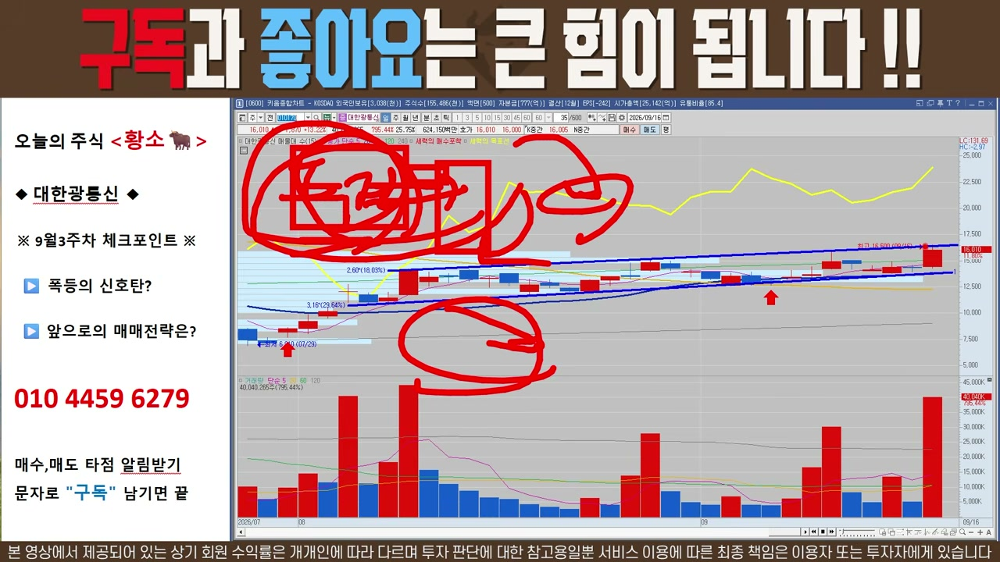
그래서 2만 원 터치를 하지 않더라도 올라가다가 생각보다 조금 빨리 팔아야 되는 타점이 나올 수 있고, 아니면 또 올라가다 보면 대한광통신이 앞전에 항상 급등 나오다 보면 얘가 투자 경고 종목으로 지정이 될 때가 있다는 것이다. 단기적으로 주가가 급등하는 종목들은 투경이나 투경 지정 예고 공시가 나오니까, 이거 걸리고 나서 대한광통신이 과거에서부터 떨어지는 케이스가 정말 많았다고 강조한다. 따라서 올라가다가 매크로 변수라던가, 아니면 혹시나 투경이 걸릴만큼 주가가 많이 올라간다라고 했을 때는 또 단기 매도 타점이 중간에 나올 수가 있기 때문에 이런 것들도 계속 체크해 볼 것이라고 밝힌다.
발화자는 대한광통신 매매할 때 우리가 알아야 될 가격 전략들, 그리고 혹시나 어떤 공시나 투경이 걸린다라거나 아니면은 중요한 이벤트나 이슈가 있다라거나 이런 것들도 분석해서 영상으로 다 알려드리니까, 혹시 아직 구독 안 하신 분들이 있으면 구독해 두셔야 이런 중요한 것들을 알려드릴 때 놓치지 않고 제 영상 제일 먼저 시청을 할 수가 있다고 강조한다.
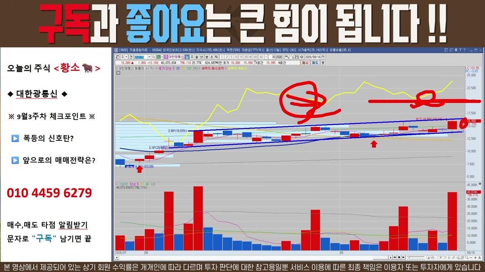
지금이 아주 중요한 또 변곡점이고 여기를 돌파를 앞두고 있는 아주 중요한 시점인데, 단순히 가격만 왔다고 해서 매수, 가격 왔다고 해서 매도하면 얼마나 매매가 쉽겠느냐고 반문한다. 주식이라는 게 항상 변수가 있고 또 상황이 달라질 때가 있는데, 그럴 때 우리가 믿고 살펴봐야 되는 것은 정확한 타점을 잡기 위해서 매수나 매도 타점을 잡을 때 이 수급을 꼭 봐야 된다는 것이다. 어떤 변수가 있어서 수급이 들어오고 또 나가기 때문에 결국에 이 수급은 그런 것들을 다 반영한다고 설명한다.
대한광통신은 지금 외국인들이 오늘 또 강력하게 매수를 하면서 끌어올리고 있는데, 앞전에도 보면 외국인들이 매수를 할 때 주가가 급등 나왔다가 외국인들이 팔면서 주가가 떨어졌다. 그러면 오늘 외국인의 프로그램 매수가 강력하게 들어오고 있는데, 기관 쪽도 들어오고 투신도 들어오긴 하지만 영향력 자체가 외국인이 제일 크다.
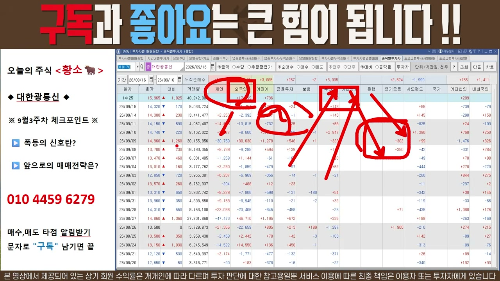
그럼 만약에 오늘은 매수를 하고 있는데 외국인들이 이 물량들을 갑자기 던져버리거나 패닉기 치면 어떻게 될까? 주가가 올라가다가 고점이 나오고 아주 세게 떨어져 버릴 것이다. 우리가 그런 움직임이 나왔을 때 매도 못 하면 또 하방을 엄청나게 세게 때려 맞을 수밖에 없기 때문에, 우리는 지금부터 일단 대한광통신의 외국인이 샀으니까 외국인이 매도하는 그 시점을 놓치지 말아야 된다고 강조한다.
오늘이야 대한광통신 아침부터 외국인들의 매수가 강력하게 찍히면서 주가를 밀어 올렸는데, 만약에 내일부터 장중에 외국인들이 매도로 돌아서거나 매도 물량들을 쏟아낸다라고 하는 움직임들이 포착이 되었을 때는 우리도 재빠르게 매도 타점을 잡아야 된다고 발화자는 강조한다.
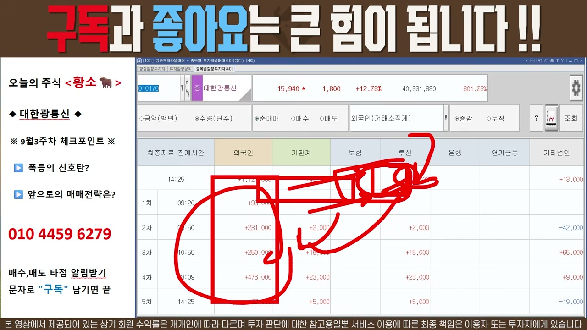
이런 것들을 1분 1차트로도 빠르게 체크를 하고 대응을 해야지, 세력들 물량 빠져나갈 때 천천히 매수하고 매도하는 게 아니라 물량들 쏟아져 들어오면서 매수 물량 들어오면서 주가를 끌어올리고, 또 매도하고 나갈 때는 순식간에 물량들을 다 털어내고 빠져 나간다는 것이다. 그래서 이 한 순간에 찰라의 타이밍만 놓쳐도 매도 못 했는데 주가가 세게 꺾여져 내려가 버리는, 못 팔았는데 떨어져 버리는 그런 피눈물 나는 상황이 나올 것이라고 경고한다. 이 종목의 특징상 외국인들이 또 매수했다가 빠져나가는 흐름들이 나올 때 매도 타점을 놓치면 한번 또 박살날 수 있으니까 이거를 놓치지 말자라고 집중을 해보자라고 당부한다.
발화자는 이런 전략들을 다 영상으로 알려 드렸지만, 아무래도 이런 수급들이 들어오고 빠져나가는 순간을 놓치면 주가가 휙 올라가 버리거나 떨어져 버린다고 지적한다. 그런데 영상만으로는 이런 타점들까지 실시간으로 잡아낼 수 없기 때문에, 채널 구독자분들은 메이저 수급들이 강력하게 들어오는 매수의 시그널들이라던가, 아니면 수급들이 매도하고 빠져나가는 그런 매도의 시그널들 타점들이 포착이 되었을 때 타점들 실시간으로도 받아갈 수가 있다고 안내한다.
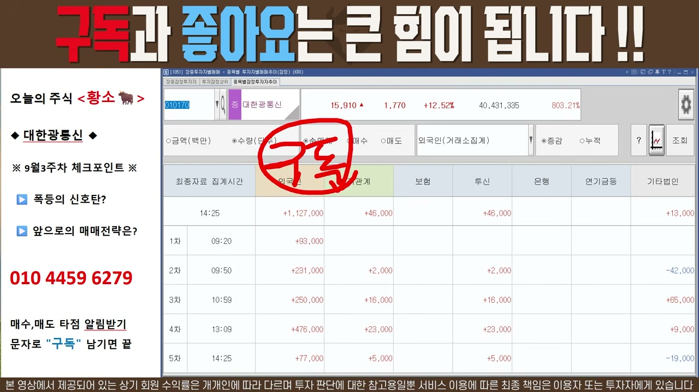
구독자분들이 중요한 타점들 나왔을 때 어떻게 받아볼 수 있느냐면, 위에 번호를 띄어놨다며 01044596279를 꼭 저장해 두시고, 그다음 우리 채널 구독자라고 구독이라고 두 글자만 문서 남겨두라고 안내한다. 그럼 문자 남기신 분들은 타점 알림 신청 완료니까, 메이저 수급들 들어오고 나가는 이런 매수 자리 매도 자리들 포착이 되었을 때 타점들 실시간 문자로도 받아볼 수가 있다는 것이다. 늦지 않게 구독이라고 두 글자만 남겨두시면 된다고 재차 강조한다.
발화자는 대한광통신의 움직임을 봤을 때 고점이 나오고 저점이 나오는 자리들이 있는데, 지금 대한광통신은 완만한 상승이 이어지고 있으며 이게 큰 저점과 큰 고점이 나오는 자리들이 있다고 말한다. 그래서 대한광통신의 궁극적인 목표가를 한 여기 한 23,500원 라인 정도 잡아볼 수 있을 것 같은데, 여기를 목표가로 잡는 이유는 올라갔을 때 여기가 노란색 선의 터치가 되는 지점이기 때문이다.
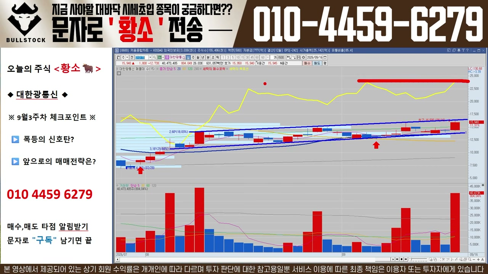
그래서 이런 자리까지 올라갔을 때는 여기서 또 큰 고점이 나오고 세게 주가가 밀릴 수가 있으니까 이런 자리들을 꼭 기억을 해야 될 거라고 강조한다. 반대로 매수의 타점이 나올 때는 대한광통신에 빨간색 화살표가 표시되는데, 이것을 세력의 매수 타점이라고 한다는 것이다.
매수의 시그널들 포착되면 올라가고, 내려왔다가 매수의 시그널들 포착되면 또 올라가고 하는 패턴인데, 매수-매도, 매수-매도, 매수-매도 이런 식으로 타점을 잡는 것이라고 설명한다.
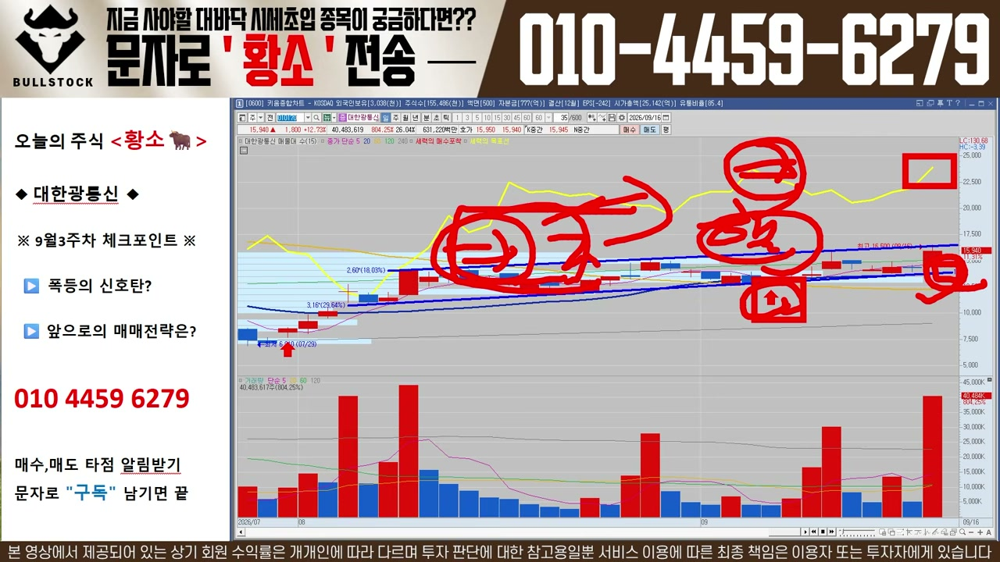
근데 여러분들이 이것만 보면은 잘 모를 수가 있기 때문에, 이 세력의 매수 매도를 이용해서 어떤 식으로 매매하는 건지 한번 알려드리고 핵심 정리를 한번 해볼 것이라고 예고한다. 타점이 나중에 떴을 때 지금부터 나왔을 때 놓치면 진짜 땅을 치고 후회할 수 있으니까 집중해보시고, 이제 슬슬 증시가 반등에 준비를 하고 있는데 우리가 이 반등이 나올 때 반격의 기회들을 잘 잡아야 된다고 강조한다. 이럴 때 반드시 좀 살펴봐야 되는 히든 종목도 뒤에 남겨놨으니까 끝까지 한번 꼭 집중해보시길 바란다고 당부한다.
발화자는 우리 채널에서 주력주로 매매를 했던 종목 중에 대한광통신이라는 종목이 있다고 소개한다. 우리의 매매 기준은 세력들이 매수를 할 때 우리도 매수, 세력들이 매도하고 나갈 때 우리도 매도를 하는 것이라고 명확히 밝힌다.
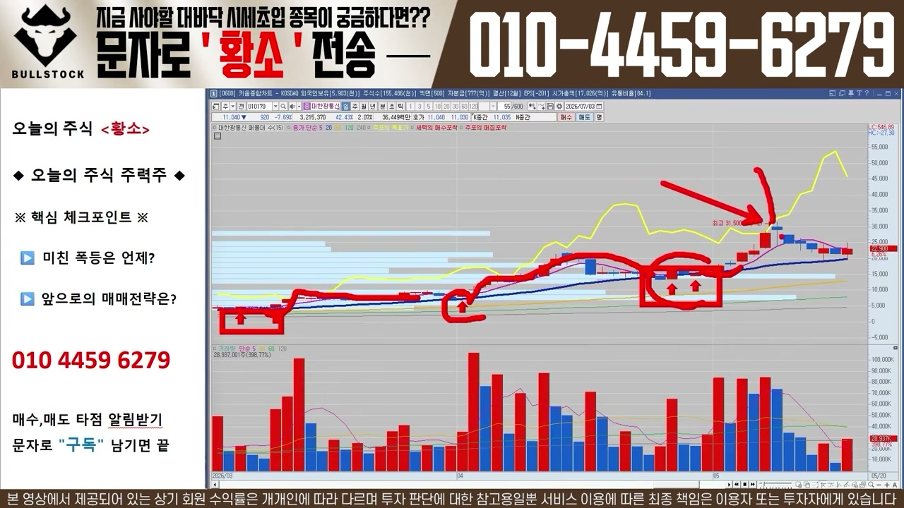
대한광통신을 보면 빨간색 화살표가 있고 노란색 선이 있는데, 빨간색 화살표를 세력의 매수 타점이라고 하면 노란색 선은 세력의 목표선이라고 한다. 매수 타점은 상승의 시작점이 되고 올라가요, 노란색 선 맞으면 조정. 세력의 매수 타점 뜨면 올라가고 노란색 선 맞으면 조정. 여기서 한 번 더 올라갔다가 내려왔을 때 다시 한번 세력의 매수 타점이 뜨니까 상승의 파동이 여기서부터 시작이 된다는 것이다.
노란색 선을 맞고 주가가 떨어지면 여기서 우리가 매수 타점과 매도 타점이 보이는데, 대한광통신이 최고점을 찍었던 날이 언제냐면 5월 12일이다. 이때 세력의 목표선을 찍기도 했고, 그래서 이 종목의 최고점이 나왔던 날 발화자가 영상도 올려드렸다고 상기시킨다.
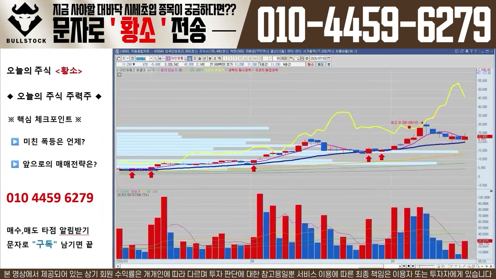
대한광통신 5월 12일 날 최고점 나왔던 날 이때 도대체 뭐라고 얘기를 했는지 잠깐 한번 같이 보자며, "우리가 단기 매도를 잡을 때는 어 이거 더 올라가면 매도를 할 겁니다라고 알려 드렸던 거고, 그래서 지금 주가가 더 올라갔어요. 그러면서 투경 요건에 해당이 된 거기 때문에 이게 또 투경 걸리면 한번 떨어질 수가 있으니까 우리는 오늘 제가 예상했던 대로 매도 타점이 한번 나왔던 거고요"라고 당시의 영상 내용을 언급한다.
이것을 알려드릴 수 있었던 이유는 결국 세력의 목표선 터치를 하면서 진짜로 세력들이 이탈하는 모습이 나왔기 때문이다. 진짜로 이때 세력들이 다 팔고 나갔는지를 확인까지 했는데, 대한광통신은 JP모건에서 미친 듯이 매수가 들어오면서 가를 끌어올렸구나, 여기서 들어오는 수급들이 주포들이구나라는 것을 알 수가 있었다고 설명한다.
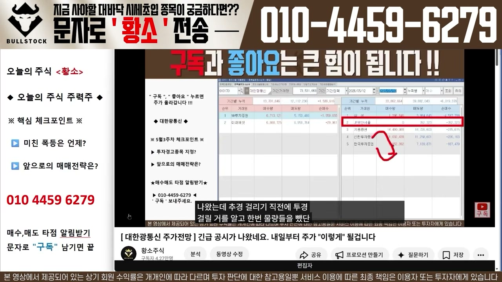
앞전까지는 얘네가 계속 매수를 했는데, 5월 12일로 요거를 변경을 해보면 삼성 쪽에서도 매수가 매도가 좀 많이 나왔고, 그다음에 JP모건 얘네는 원래 매수를 하던 투자 주체들인데 지금 매도를 했다는 것이다. 물론 다 매도한 거 아니고 물량들 아직은 많이 안 나왔는데, 투경 걸리기 직전에 투경 걸릴 거를 알고 한번 물량들을 뺐다는 것이다. 그럼 앞전까지는 매수 창구로 작용을 하던 JP모건이 그 매도로 한번 돌아섰다라는 거니까 그것도 조정이 나올 수 있는 명분이 될 수 있다고 분석한다. 그래서 진짜로 주포들이 팔고 나가는 모습이 나왔기 때문에 이때 매도 타점을 한번 잡아드렸던 거고, 여기서 우리가 알 수 있는 거는 "메이저 수급들이 매수를 할 때 우리도 매수를 하고 매도를 하고 나갈 때 우리도 팔고 도망쳐야 되는구나" 이런 것들을 명확하게 좀 알 수가 있었다고 정리한다.
발화자는 예시 하나만 더 살펴보자며 LG전자 사례를 제시한다. LG전자도 최근에 주가가 올라갈 때 세력의 매수 타점이 뜨고 올라가고, 세력의 매수 타점이 뜨고 올라가는 패턴들이 있어서, 우리가 공략을 했던 구간들이 바로 이렇게 세력들이 매집이 들어올 때 상승의 시작점에서 공략을 했던 거라고 설명한다.
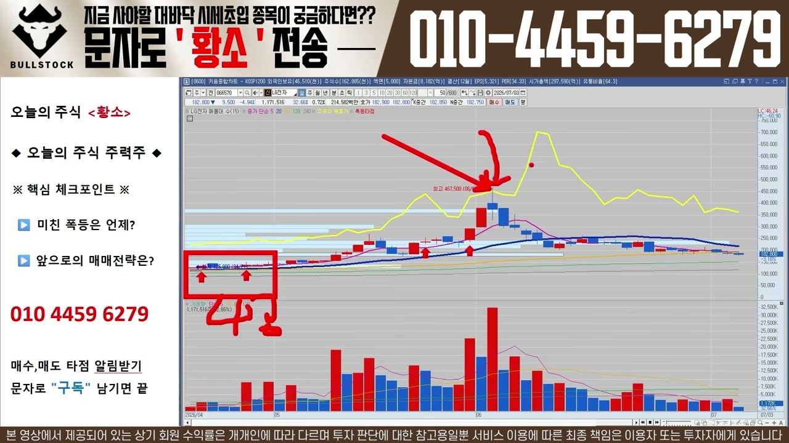
그러면 어디서 매도를 했을까요? 올라갔을 때 여기 노란색 선, 터치하는 지점에서 매도를 했겠다고 답한다. LG전자가 고점이 나왔던 날짜가 6월 2일인데, 발화자는 6월 2일 날 LG전자의 영상을 올려드리면서 "우리가 그냥 올라가는 거 따라 들어갔다가는 이런 하락을 때려봤거나 엄청난 변동성을 여러분들이 견뎌내지 못할 수가 있습니다"라고 경고했다고 밝힌다.
만약에 여러분들이 올라갈 때 막 급등한다고 따라 들어갔다가 -30%, 40%까지 내려가면은 여러분들 이거 버틸 수 있어요? 솔직히 제가 그런 상황이라고 하면은 저는 못 버틸 거 같아요.
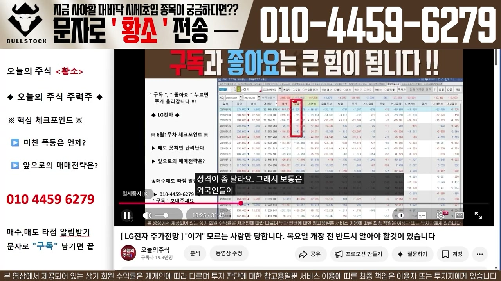
그래서 이거 고점 신호 나왔는데 이런 자리에서 따라 들어가면 안 된다, 이거는 매도 타점이다라고 알려드리고 적어 놨다고 한다. 영상에서도 "매도 못하면 난리난다"라고 했다는 것이다. 그리고 이때도 실제로 메이저 수급들, 주포들이 빠져 나가는 모습들이 확인이 되었는데, 개인들과 외국인 기관은 성격이 좀 다르다며 보통은 외국인들이 매매를 잘한다고 설명한다. LG전자 같은 경우에는 꼭 그렇지는 않았지만, 이게 막 고점 부근에서 대량의 매도가 나오는 경우가 많아요, 외국인들이 대량으로 매도를 할 때는 우리가 조심할 필요가 있다고 강조한다. 이날도 외국인이 엄청난 대량의 매도를 했고, 매수를 하던 기관까지 매도로 돌아섰기 때문에 메이저 수급들이 팔고 도망치는, 빠져나가는 모습이 나왔기 때문에 우리도 같이 매도 타점을 잡을 수가 있었던 것이라고 정리한다.
그다음에 어떻게 됐느냐면 가가 미친듯이 떨어졌다고 한다. 지나고 나서 봤을 때 이런 자리에서 외들 그리고 세력들이 팔고 나가는 자리에서 못 팔면은 큰일 나는구나 이거를 알 수가 있다고 강조한다.
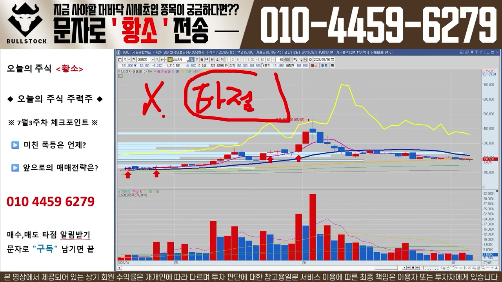
그래서 우리 채널에 구독자라면 영상 올려 드리는 종목들은 중요한 매수나 매도 타점대를 놓치지 않도록 타점이나 대응 전략까지도 받아가실 수가 있다고 안내한다. 근데 이거 뭐 돈 드는 거 아니냐 하시는 분들이 있는데 돈 필요 없고, 유튜브 멤버십방 이런 거 아무것도 안 하셔도 된다며, 그냥 우리 채널 구독 한 번씩만 눌러주시면 된다고 강조한다. 타점이랑 대응 전략 필요하신 분들은 위에 번호를 띄어놨으니까 01044596279로, 우리 채널 구독했다라는 의미에서 구독 그리고 종목 명까지 남겨두시면 종목에 대한 타점대 그리고 대응 전략까지도 받아가실 수가 있다고 설명한다. 예를 들어서 삼성전자면 삼성이라고 남겨두시면 된다는 것이다.
발화자는 우리 채널의 구독자 수가 벌써 19만 명을 넘어가고 있는데, 최근 우리 채널의 채널 성장 그래프를 보면 엄청나게 가파른 속도로 상승하고 있다라는 걸 알 수가 있다고 말한다.
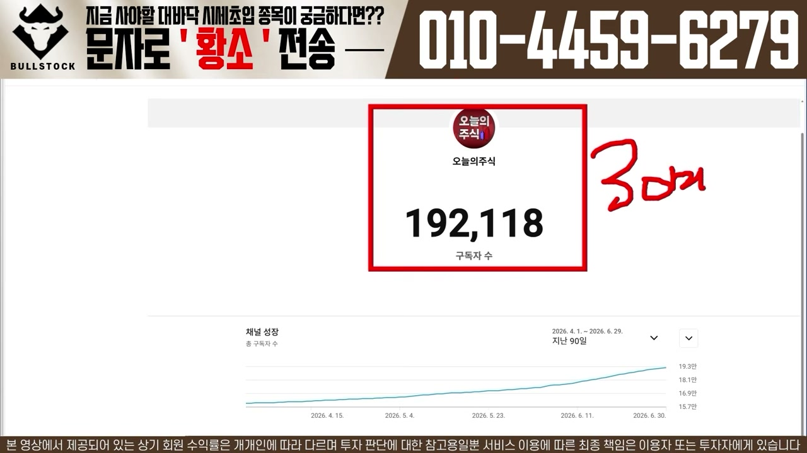
만약에 제가 여러분들에게 도움이 안 되고 별 볼 일 없는 내용들을 알려드렸다라고 하면은 이렇게 많은 분들이 우리 채널을 구독하고 우리 채널에 이렇게까지 성장할 수 없었을 것이라고 자평한다. 그래서 제 목표는 우리 채널의 구독자 수를 30만 명을 달성하는 것이라며, 들어오기 위해서는 제가 앞으로도 여러분들에게 도움이 되는 내용들, 좋은 종목들이나 타점들이 있을 때 알려드리면서 같이 매매를 할 거니까, 저는 그러면서 우리 채널을 성장시켜 나가고 여러분들은 우리 채널이 성장하는만큼 많이 벌어 가시면 된다고 말한다. 우리 채널 성장할 수 있게 도와주신 많은 구독자분들 정말 감사드리고, 혹시 아직 구독 안 하신 분이 있다면 오늘부터 우리 채널 구독 한 번씩 눌러두시라고 권한다.
앞으로 우리 채널이 구독자 30만을 달성하는 여정을 함께 해보시는 건 어떨까요, 우리 채널이 성장하는만큼 우리 구독자분들의 계좌도 우상향할 거라고 생각을 한다고 발화자는 말한다. 그리고 제 이름이 왜 황소인지 아시나요, 주식 시장에서 황소는 주가가 올라갈 거라고 믿는 이 상승장에 배팅을 하는 투자자입니다. 그래서 저는 결국에는 주식 시장이 우상향한다라고 믿기 때문에 앞으로도 황소 같은 매매 이어가 볼 거니까요, 이름도 까먹지 말고 기억해주시면 되겠다고 말한다.
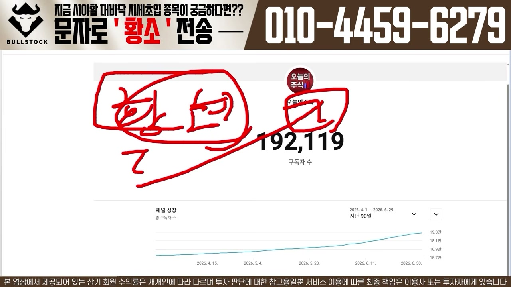
그리고 여기까지 영상 잘 시청해 주신 분들을 위해서 지금 보고 있는 히든 종목 힌트를 한번 드려볼게요. 지금 800조 규모의 반도체 메가 프로젝트에 대한 얘기가 나오면서 이것과 관련된 최대 수주를 우리가 살펴볼 필요가 있습니다. 그러면 삼성전자나 SK하이닉스가 이제 신규 공장을 짓는다라고 했을 때 이 비용이 어디에 많이 있을까요, 투자 비용의 상당 부분이 이제 웨이퍼 위에 회로를 새기고 깎는 이 전공정 장비에 투입이 됩니다.
발화자는 전공정에서도 핵심은 증착 장비의 최강자가 있거든요라고 언급한다. 이 메가 프로젝트를 통해서 지어지는 삼성전자라던가 SK하이닉스의 신규 공장들은 침노 이하의 초미세, 디램이라던가 HBM 등 첨단 AI 반도체를 생산할 예정이다.
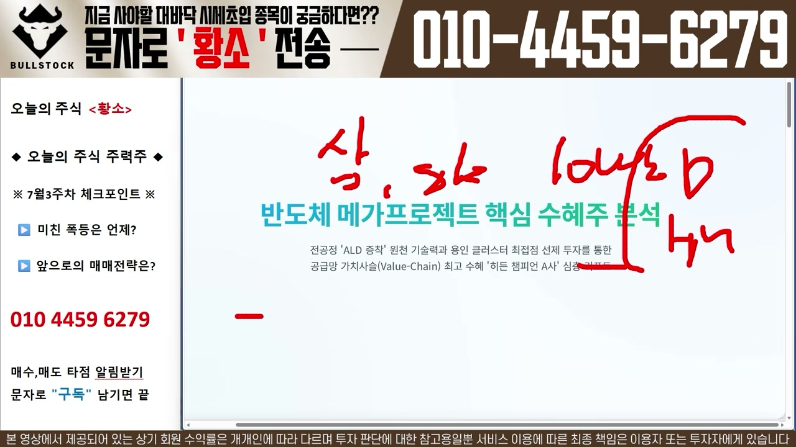
근데 이 반도체 회로가 극도로 얇아지게 되면은 기존의 이제 증착 방식으로는 이 막을 균일하게 쌓을 수가 없게 된다. 그래서 이때 원자 한 층 두께로 미세하게 막을 쌓아 올리는 이 원자층 증착 장비가 이제 필수적인데, 이 분야에서만큼은 독보적인 기술력을 가지고 있는 기업의 수혜를 볼 수가 있겠다고 분석한다. 그래서 이 기업은 이미 용인 R&D 센터 바로 옆부지에 1천억 이상을 좀 투자를 하면서 용인 제2연구소를 신설하고 선제적으로 이제 미래 연구 개발 공간을 늘려왔다고 소개한다.
용인 반도체 클러스터는 SK하이닉스, 삼성전자와도 지리적으로 매우 가깝기 때문에 이 신규 팹(패비)이 들어설 때에 대형 고객사의 요구 사항에 가장 빠르고 긴밀하게 좀 대응할 수 있는 그런 인프라를 이미 갖추고 있다라고 볼 수가 있다고 발화자는 설명한다.
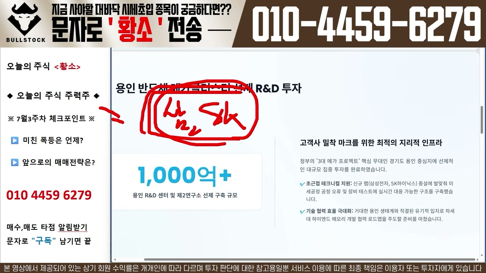
그래서 지금 국내 증시는 어쨌든 삼성전자라든가 SK하이닉스라던가 이런 반도체 대표주들의 영향력이 굉장히 커졌기 때문에, 이 기업들과 밀접한 관련이 있는 그리고 이 기업들이 투자를 할 때를 볼 수 있는 기업들이 앞으로는 훨씬 더 많이 주목을 받을 것이라고 전망한다. 그래서 이 기업은 지금 시장이 폭락하던 상황에서도 주가 크게 밀리지 않고 박스권으로 힘을 모으면서 다음 시세를 분출할 준비를 하고 있는데, 여기서도 지금 메이저 수급들이 들어오면서 상승하는 패턴이 나왔고, 그리고 지금도 박스권을 모이면서 자 다음 상승이 나올 준비를 하고 있다고 분석한다.
이런 핵심 주력주들은 영상 보다가 중간에 끄신 분들은 아마 모르실 거고, 이렇게 영상 끝까지 보시는 분들은 챙겨 가실 수가 있을 거라고 발화자는 말한다. 최근에 시장이 조금 많이 내려서 계좌의 손실이 크다 하시는 분들도 있을 텐데, 우리가 종목 하나만 매매를 잘해도 일전을 좀 노려볼 수가 있다고 위로한다.
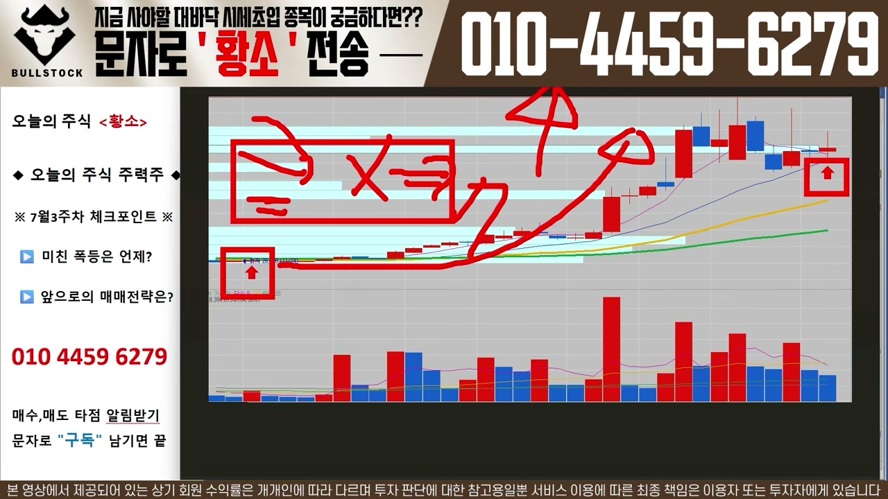
우리 채널에 다음 주력주 궁금하다 하시는 분들은 여기 위에 번호를 띄어놨죠, 01044596279로 럭키 7, 자 숫자 7 남겨두시면은 종목이랑 타점대를 공유받으실 수가 있을 겁니다. 또 출발해버리거나 늦으면은 비싸게 사야 되니까 잘 챙겨가시길 바라겠다고 당부한다. 그럼 대한광통신으로 돌아가서, 세력의 매수 타점 뜨고 올라갔다가 내려왔을 때 또 세력의 매수 타점 뜨고 올라갔다가, 그러면 다음 타점이 또 떴을 때 그 타점만큼은 놓치면 안 되겠고, 그다음에 또 상방을 이제 올라가는 과정에서 2만 원이 1차 목표가, 그다음이 또 궁극적으로 23,500원이라고 정리한다.
요런 식으로 목표가를 잡아놨는데, 어쨌든 이 가격은 기준이 되는 가격이다. 올라갔을 때 세력들이 매도할 수 있는 명분이 생기는 시점인데, 이런 가격 전략들은 조금씩 달라질 수가 있다고 발화자는 강조한다.
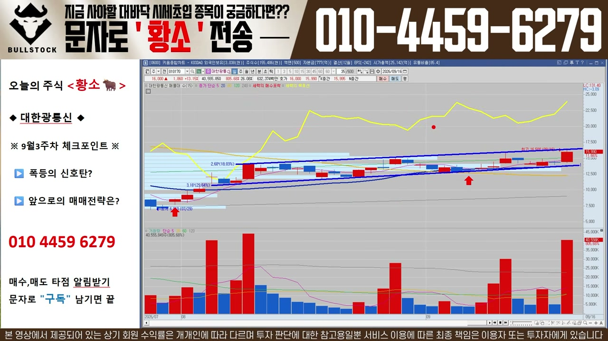
주식이라는 게 항상 변수가 있기 때문에 우리가 그냥 정해 놓고 매매를 하는 게 아니라 상황에 맞게 대응을 하는 게 훨씬 더 중요하다. 그래서 이 가격들은 이제 기억을 해두시고, 진짜 중요한 거는 영상을 계속 시청을 하셔야 되는 이유가 올라가다가 뭐 가격 전략이 달라질 수 있고, 지금처럼 뭐 이슈가 나와서 올라가거나 떨어지는 움직임들이 바뀔 수가 있기 때문에 이런 것들 계속 체크하고 알려드릴 거라고 약속한다.
대한광통신은 어쨌든 지금은 단기적인 움직임이 중요하기 때문에 여기를 돌파를 하냐, 이제 눌렀다 가냐, 아니면 돌파가 바로 나오냐, 자 요 차인데 어떤 흐름이 나오든 올라갔을 때는 매도 또 돌리면 매수 타점들이 나올 수가 있으니까 요것도 내일부터 집중해서 타점 대응 이어가 봐야 될 것 같다고 마무리한다.
그래서 다음 영상도 여러분들 꼭 시청하러 오시고, 대한광통신 주주분들 우리 다 같이 파이팅 한번 해보자라는 의미에서 파이팅이라고 댓글도 한 번씩 남겨주시고, 그러면 내일장 집중해서 또 살펴보도록 하겠다고 끝맺는다.
"저는 이번에는 대한광통신이 여기를 돌파를 해 낼 거라고 봅니다. 근데 중요한 거는 이게 바로 돌파가 안 나오고 잠깐 쉬었다가 돌파를 할 수가 있거든요. 왜냐면 변수가 있기 때문에."
"주봉상에서 중요한 자리를 돌파를 하면은 거기서부터 추가적인 상승세가 이어질 수 있기 때문에, 그래서 여러분들 대한광통신 이번 상승은 뭔가 앞전이랑 조금 다르다."
"매수 타점을 잡을 거라면은 이 눌림을 잘 활용을 해 볼 거다라는 거 기억을 해 두시고요."
"대한광통신은 항상 거래가 터졌다가 주가 눌릴 때 거래 바닥칠 때 타점이 나왔습니다."
"메이저 수급들이 매수를 할 때 우리도 매수를 하고 매도를 하고 나갈 때 우리도 팔고 도망쳐야 되는구나."
"세력들 물량 빠져나갈 때 이렇게 천천히 매수하고 매도하는게 아니라 물량들 쏟아져 들어오면서 주가를 끌어올리고 또 매도하고 나갈 때는 순식간의 물량들을 다 털어내고 빠져 나갈 거기 때문에, 우리가 이 한 순간에 찰라의 타이밍만 놓쳐도 매도 못 했는데 주가가 세게 꺾여져 내려가 버리는, 못 팔았는데 떨어져 버리는 그런 피눈물나는 상황 나올 겁니다."
"만약에 여러분들이 올라갈 때 막 급등한다고 따라 들어갔다가 -30%, 40%까지 내려가면은 여러분들 이거 버틸 수 있어요. 솔직히 제가 그런 상황이라고 하면은 저는 못 버틸 거 같아요."
"주식이라는게 항상 변수가 있기 때문에 우리가 그냥 정해 놓고 매매를 하는게 아니라 상황에 맞게 대응을 하는게 훨씬 더 중요합니다."
"주식 시장에서 황소는 주가가 올라갈 거라고 믿는 이 상승장에 배팅을 하는 투자자입니다. 저는 결국에는 주식 시장이 우상향한다라고 믿기 때문에 앞으로도 황소 같은 매매 이어가 볼 거니까요."
이 영상의 핵심 메시지는 대한광통신이 주봉상 26일선을 돌파하며 매물 소화를 마치고 새로운 상승 국면에 진입할 가능성이 크다는 것이다. 발화자는 이번 상승이 앞전의 무작정 때려맞는 상승과 질적으로 다르다고 판단하며, 그 근거로 ① 충분한 매물 소화 과정과 조정을 겪었다는 점, ② 1년선 지지 후 6개월 선을 뚫어내려는 준비 과정이 이어졌다는 점, ③ 오늘 실제로 26일선을 돌파했다는 점을 제시한다.
가격 전략 측면에서 발화자는 15,250원을 1차 지지선(매수 반격 타점), 20,000원을 1차 목표가(저항), 23,500원을 궁극적 목표가(세력 목표선)로 제시한다. 특히 매수는 '올라갈 때'가 아니라 '눌릴 때', 그것도 거래량이 터졌다가 바닥칠 때 잡아야 한다는 원칙을 거듭 강조한다. 매도는 외국인 프로그램 매매 동향과 세력의 이탈 여부를 1분 차트로 실시간 확인해야 하며, 이때 순식간에 물량이 빠져나가므로 찰라의 타이밍을 놓치면 큰 손실을 입을 수 있다고 경고한다.
리스크 요인으로는 유가 급등, 미국 국채 금리 상승, FOMC 금리 인상 발표 같은 매크로 변수와 함께, 급등 시 발생할 수 있는 투자경고 종목 지정(투경)이 강조된다. 발화자는 과거 대한광통신이 투경 직전에 주포(JP모건 등)가 물량을 빼고 주가가 급락한 사례를 근거로, 메이저 수급의 이탈을 반드시 확인해야 한다고 역설한다. LG전자 사례(6월 2일 고점)도 동일한 패턴의 검증 사례로 제시되며, "매도 못하면 난리난다"는 메시지가 반복된다.
영상 말미에는 800조 규모 반도체 메가 프로젝트(용인 반도체 클러스터)와 관련된 히든 종목이 예고된다. 원자층 증착 장비 분야의 독보적 기술력을 보유하고, 용인 R&D 센터 옆부지에 1천억 이상을 투자해 제2연구소를 신설한 기업으로, 시장 폭락에도 박스권으로 힘을 모으며 다음 상승을 준비 중이라는 분석이다. 다만 이 종목의 구체적 이름은 공개되지 않고, 문자(01044596279)로 '럭키 7'을 남긴 시청자에게만 공유되는 구조로, 영상은 시청 지속과 구독을 유도하는 마케팅적 성격도 강하게 띤다.
종합하면, 이 영상은 대한광통신에 대한 강세 전망(상방 우위)과 함께, 세력 수급 추적을 통한 철저한 매매 타이밍 관리의 중요성을 동시에 강조하는 실전 매매 전략 콘텐츠다. 시청자가 취할 실용적 시사점은 ⓐ 15,250원/20,000원/23,500원의 가격 기준을 기억할 것, ⓑ 눌림과 거래량 바닥에서 매수하고 외국인·주포의 매도 전환 시 즉시 대응할 것, ⓒ 투경 및 매크로 변수를 상시 모니터링할 것, ⓓ 무엇보다 영상을 끝까지 시청해 가격 전략의 변화를 계속 추적할 것 등이다.
댓글
GitHub 이슈 기반 댓글 시스템입니다.